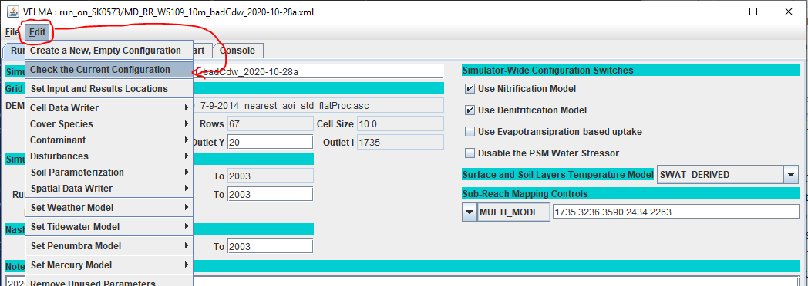

Checking a Configuration for Warnings or Errors
Overview
The VELMA simulator produces an extensive number of logger messages during a simulation's initialization and running time. In the JVelma GUI the messages appear in the Console tab, while VELMA command-line invocations emit them directly to the command-line's output. The messages convey the progress and status of the simulation attempt. When a simulation fails to run as expected the logger messages can provide clues for identifying and correcting issues responsible for the failure.
However, the large number of total messages can obscure the smaller number of warning or error messages that are useful for identifying and correcting configuration problems. To highlight warning and error messages, and to make them available without actually running a simulation, the VELMA simulator provides a configuration-check option. When selected, the VELMA simulator performs its initialization step, but then halts without actually running, and during the initialization step, only warning and error messages are displayed.
Caveats and Limitations
Availablity
The Configuration-Checker function is only available in VELMA version 2.0.1.34 or later.
The Configuration-Checker is only available via the JVelma GUI or VelmaSimulatorCmdLine.
(Although it is unavailable for VelmaParallelCmdLine, you can use VelmaSimulatorCmdLine to check any VELMA simulation configuration .xml file before running that same .xml file under VelmaParallelCmdLine.)
Running Time and Completion
During the configuration-check VELMA performs a full initialization of the specified configuration.
If your simulation takes a long time to initialize, it will take a long time to check.
If your simulation does not allocate enough memory (via the Java -Xmx option) and crashes during initialization, that will happen during the check attempt as well.
If your simulation invocation is in some way invalid, it may crash before the checker even starts (however, this is almost exclusively a VelmaSimulatorCmdLine-usage concern).
Results Interpretation
A "clean" checker result (i.e. minimal warnings and no errors) does not guarrantee that the checked configuration will run correctly or to completion.
Some warnings and errors only occur during a simulation run: since the checker does not run the simulation, runtime-specific warnings or errors will not be revealed.
The checker results are only as thorough as the existing initialization code's ability to identify and report warnings or errors.
(The VELMA development group hopes to provide additional configuration-checking code in future versions.)
A "dirty" checker result does not guarrantee that the checked configuration will fail to run, or run incorrectly.
If you see a SEVERE logger message, you can be fairly certain the checked configuration will fail to run, however the checker may produce warnings that you know are "ok", and can freely ignore.
For example, the following warning:
WARNING 2021-01-29 10:15:49 CellDataWriterManager: IGNORED CellDataWriter: name=OffGrid at cell x=90 y=90 index=-1 [OFF-GRID LOCATION (Grid is: cols=86 rows=67)]
indicates that a cell data writer in the configuration has invalid coordinates for the current DEM grid, and that it will be ignored if the simulation is actually run. If you do not care about this cell data writer (perhaps it's a leftover from .xml-reuse), you can ignore this warning. On the other hand, if you are counting on data generated by this cell data writer as part of your simulation results, you should review the configuration and see why it is parameterized to an invalid location.
Usage
Checking a Configuration With the JVelma GUI
- Start JVelma and load a simulation configuration .xml file.
- Select and click JVelma's
Edit --> Check Current Configurationmenu item. - Focus will shift to JVelma's Console tab, and warning and/or error messages will appear there.
(The text can be marked, copied, and pasted to Notepad or other Windows clipboard-aware apps.)
The messages will remain in the Console tab until you perform one of the following actions:- Load a different simulation configuration .xml file.
- Run Check Current Configuration again.
- Start a simulation run.
Here is a screen-capture showing selection of the "Check Current Configuration" menu item:

This is an example of what the JVelma Console output looks like when the "Check Current Configuration" menu item is selected:

Checking a Configuration With VelmaSimulatorCmdLine
- Open an MS Powershell Window.
- Invoke VelmaSimulatorCmdLine with your specified configuration .xml file as though you are actually running it,
but: add the--lintoption to the commane line. - Warning and/or error messages will echo to the Powershell window.
Here is an example using VelmaSimulatorCmdLine:
Windows PowerShell
Copyright (C) Microsoft Corporation. All rights reserved.
PS C:\Users\me> java -Xmx1g -cp C:\Users\me\Velma\JVelma.jar `
>> gov.epa.velmasimulator.VelmaSimulatorCmdLine `
>> C:\Users\me\Velma\Case_Studies\MD_Chesapeake\WS109\XMLs\MD_RR_WS109_10m_badCdw_2020-10-28a.xml `
>> --lint
VELMA LINTER: started at 2021-02-03 11:17:01
WARNING VelmaSimulatorEngine runLinter: VELMA Lint Mode Enabled: startups parameter suppressAllOutputFiles overridden and set == true
WARNING GlobalState setOutputDataLocationDir: All File Output is suppressed: ignoring Output Data Location
WARNING SoilParameters setSoilLayerWeights: Soil column weights [0.16670000553131104, 0.16670000553131104, 0.16670000553131104, 0.5] sum=1.0001 but should sum to 1.0 -- either the initial values are incorrect or the floating-point arithmetic produced an inexact result.
WARNING SoilParameters setSoilLayerWeights: Soil column weights [0.018200000748038292, 0.018200000748038292, 0.018200000748038292, 0.9455000162124634] sum=1.0001 but should sum to 1.0 -- either the initial values are incorrect or the floating-point arithmetic produced an inexact result.
WARNING SoilParameters setSoilLayerWeights: Soil column weights [0.022199999541044235, 0.022199999541044235, 0.022199999541044235, 0.9333000183105469] sum=0.9999 but should sum to 1.0 -- either the initial values are incorrect or the floating-point arithmetic produced an inexact result.
WARNING SoilParameters setSoilLayerWeights: Soil column weights [0.028599999845027924, 0.028599999845027924, 0.028599999845027924, 0.9143000245094299] sum=1.0001 but should sum to 1.0 -- either the initial values are incorrect or the floating-point arithmetic produced an inexact result.
WARNING GlobalState initializeCoverSpeciesForRun: CoverSpecies uniqueId=500 uniqueName="NoData" referenced in: dem=NO sid=NO inSidCount=0
WARNING CellDataWriterManager load: IGNORED CellDataWriter: name=OffGrid at cell x=90 y=90 index=-1 [OFF-GRID LOCATION (Grid is: cols=86 rows=67)]
VELMA LINTER: done at 2021-02-03 11:17:02
PS C:\Users\me>
Sidenote: The above example uses a whitespace + backtick ("`", not the single-quote character) sequence to break the single command line into multiple, shorter lines that are easier to read. This is a built-in feature of the Windows PowerShell console: when you type a whitespace character, then a backtick character, then the return key, the PowerShell console inserts a line break, but then continues the command onto the new line, prefixed by ">>". Use this feature carefully: only break lines at whitespace within your overall command line (e.g. do not break a filename across two separate lines).
Output Notes
Running the Configuration Checker always causes the following warning messages to occur:
WARNING VelmaSimulatorEngine runLinter: VELMA Lint Mode Enabled: startups parameter suppressAllOutputFiles overridden and set == true
WARNING GlobalState setOutputDataLocationDir: All File Output is suppressed: ignoring Output Data Location
The first message occurs because the Configuration Checker always overrides a single parameter from the .xml file it checks: the suppressAllOutputFiles parameter. It forces it to true because under normal circumstances the VELMA simulator may write output files to the specified output location during initialization, and the Configuration Checker doesn't want you to have to clean up any generate-but-unused results folders/files afterwards.)
The second message occurs because of the first: whenever suppressAllOutputFiles == true, VELMA's initialization code issues a warning, so that the user should not expect any output.
When the Configuration Checker is run from JVelma, the following messages should appear first:
Checking the current configuration via the VELMA Linter.
Configuration editing is not permitted until the Linter is done.
These messages simply confirm that the Checker is running, and that you cannot edit your configuration while it runs. You can navigate around the JVelma GUI's other tabs while the Checker is running, but it may snap the focus back to the Console tab when it is done.
Regardless of where it is run, the Configuration Checker brackets its output with a pair of messages:
VELMA LINTER: started at 2021-02-03 11:17:01
[ . . . ]
VELMA LINTER: done at 2021-02-03 11:17:02
Sidenote: Whence the "Linter" and "Lint" Terminology?
Within VELMA, the configuration-checker code is called the "linter".
Among software developers, "linting" refers to scanning code for issues that, while not fatal, may be undesirable. The term originates from a 1970s-era Unix tool that scanned C programs for issues that were not serious enough to trigger a compiler error, but which might still require review or correction.